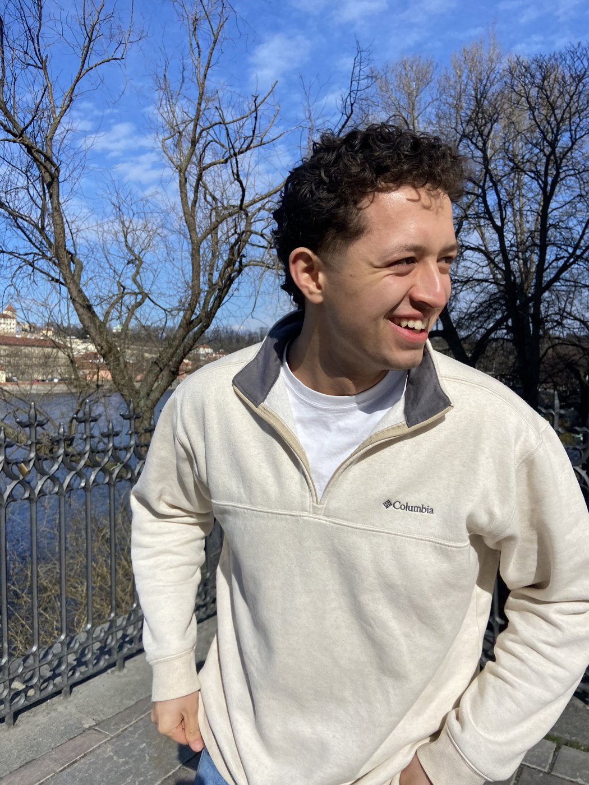
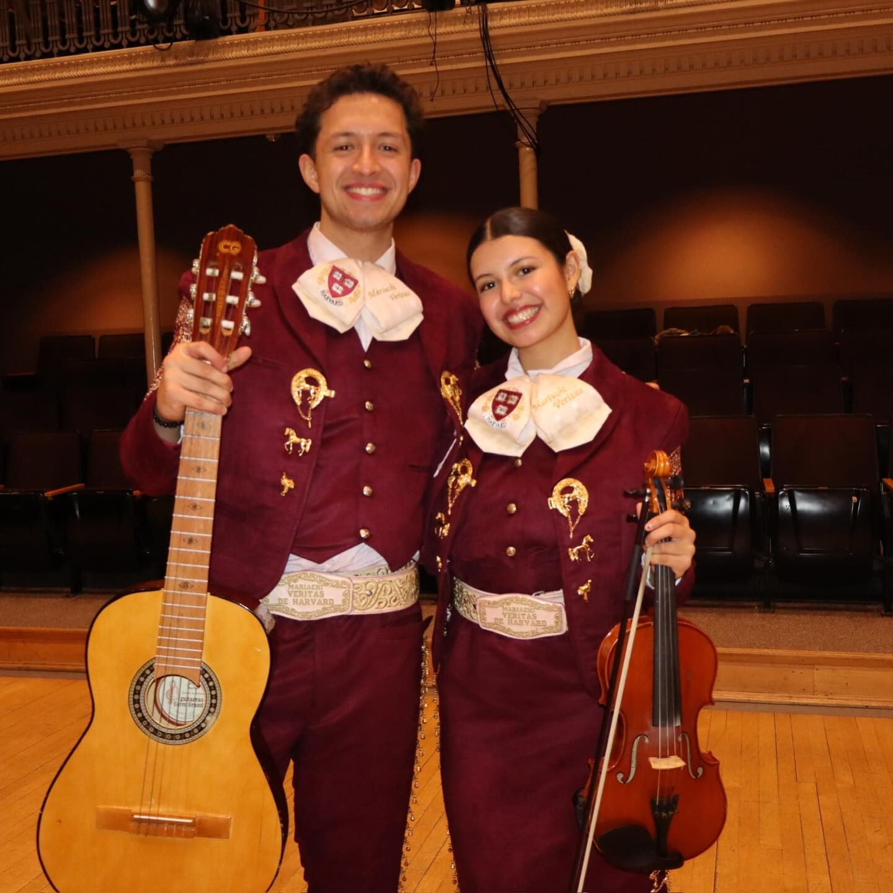
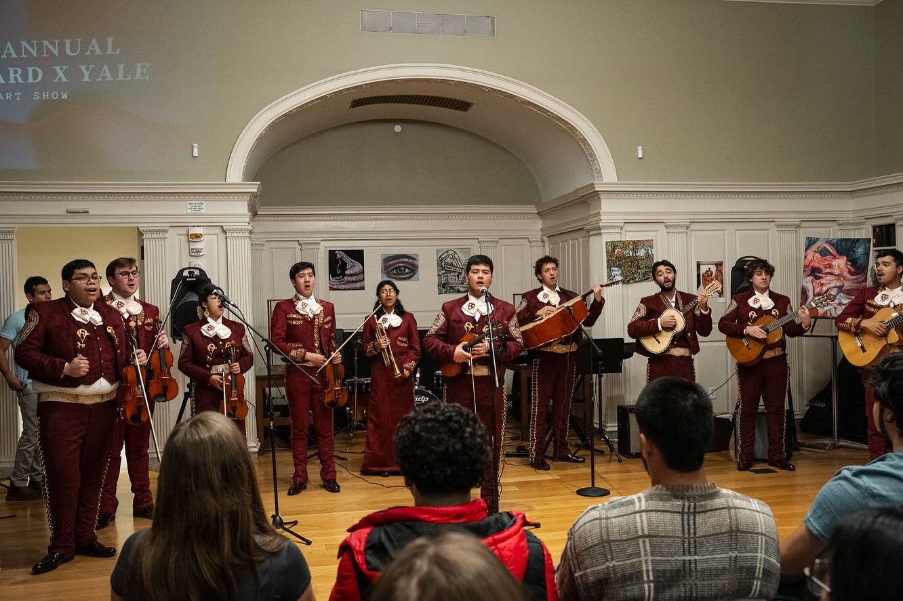
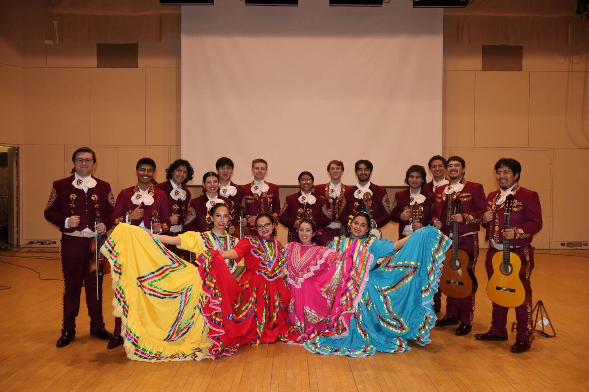
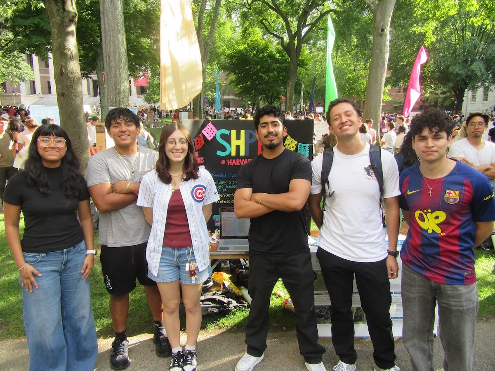
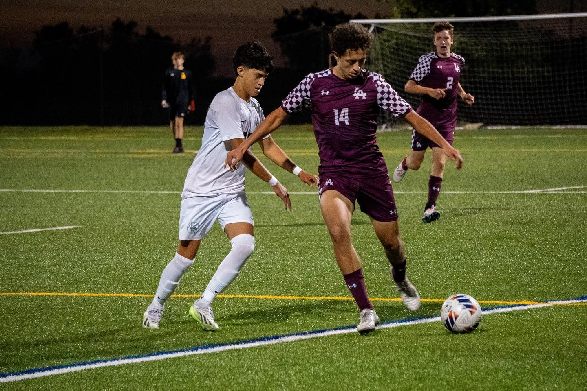
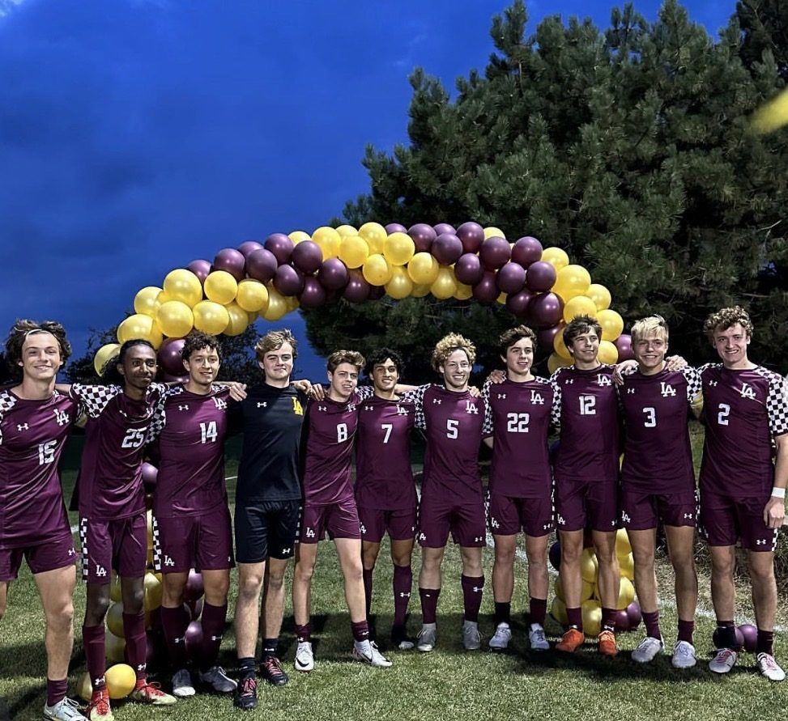

About
Engineer and community oriented
Apart from being a mechanical engineering student at Harvard, I am a musician, a soccer player, and a board member of SHPE, where I work to make engineering more accessible to students from underrepresented backgrounds.

Off the clock
How I spend the rest of my time.

Music
Harvard Undergraduate Mariachi
Playing with Harvard's mariachi ensemble is how I keep my Mexican roots close at school. We perform across campus, including the annual Harvard x Yale concert, and alongside folklórico dancers.



Leadership
SHPE Board
As a board member of Harvard's chapter of the Society of Hispanic Professional Engineers, I help build the support and access that lets more students see themselves in engineering.

Sport
Soccer
Soccer is the game I grew up on, and it taught me a lot of what I bring to a team: communication, discipline, and playing your role so the whole side works.

What I bring
Hands-on, and team oriented.
Build literacy
Design for the shop floor
Manufacturing limits are design information. I'd rather find them early in CAD than late at the lathe.
Team energy
Clear ownership
I care about who owns what, communicating often, and making sure a good idea survives a busy week.
Give it back
Widen the room
Engineering means the most to me when it grows who gets to take part and who benefits.
Toolkit
Tools I've used on real parts.
- SolidWorks
- Parts · assemblies · drawings
- Manual lathe
- Shafts · drivetrain parts
- CNC machining
- Plates · supports
- Silicone molding
- Wheels · gripper pads
- Woodworking
- Plywood hull build
- Prototyping
- Cardboard mockups · sketches